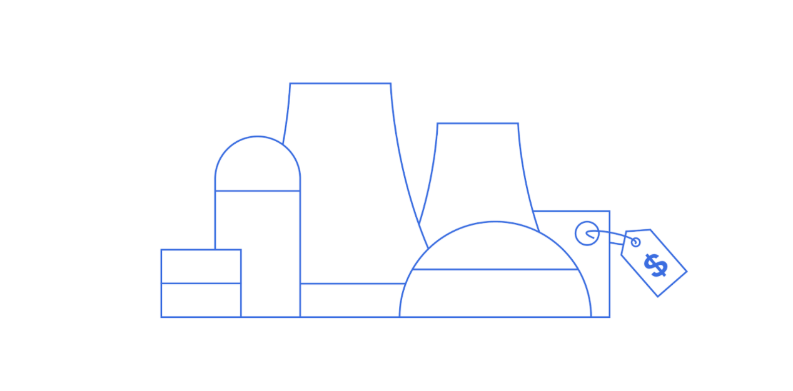
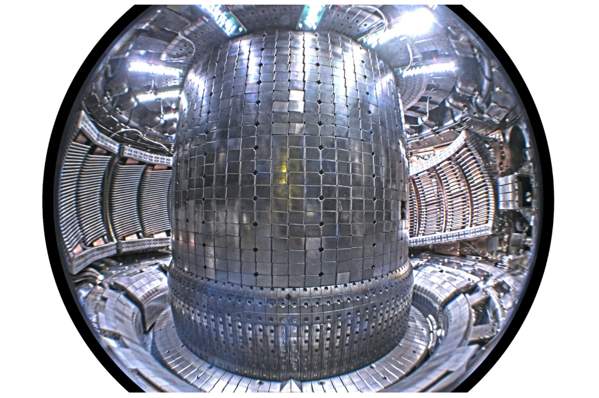

First commercial fusion power plant
The first commercial fusion-power plant could come online between 2035 to 2040, about ten years after net-energy gain is demonstrated. Once this milestone is achieved, and the economics are shown to pencil out, the real engineering work begins.
We expect that completing the engineering design of a fusion power plant, getting financing, selecting a site, getting regulatory approval, scaling manufacturing for key components, and the actual construction of a first-of-a-kind fusion plant could be completed over ten year’s time. Additional engineering challenges that need to be solved include:
- 1. Design of a ‘blanket’ to convert the neutrons generated by fusion into energy
- 2. Determining how tritium (a key component of fusion fuel) will be recovered from the reactor
- 3. Demonstrating that the materials used in the fusion reactor will survive long-term in a power environment
People are already working on these problems, but they are certainly non-trivial!
Interior of Alcator C-Mod at MIT showing the molybdenum tiles used as the “first wall” material. Identifying robust materials for the “first wall” is a critical challenge to bridge from experiment to power plant. Image By Mike Garrett - Own work, CC BY 3.0.